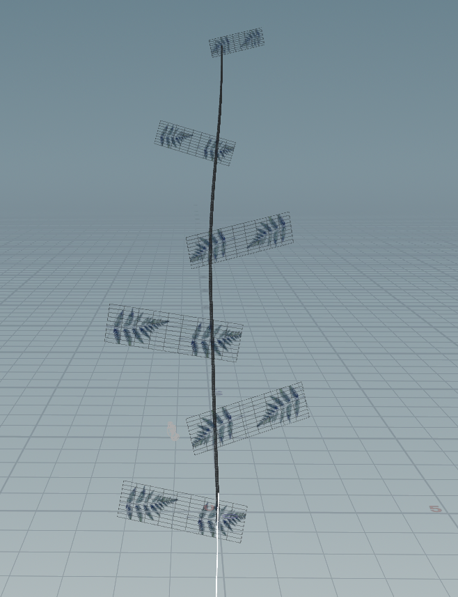
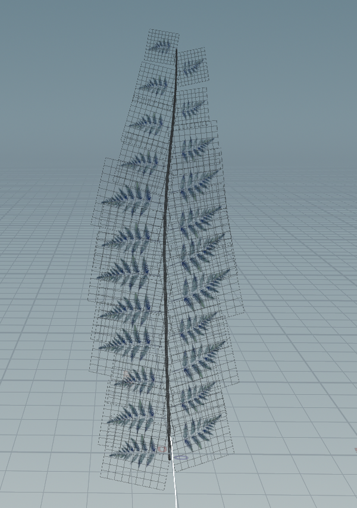
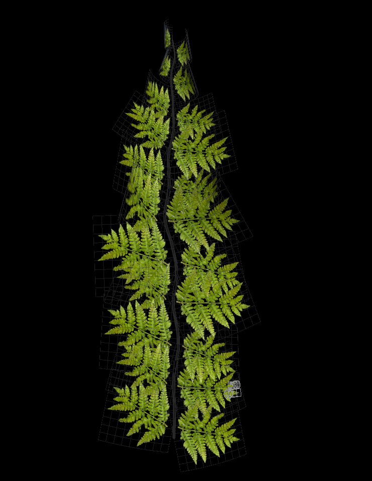
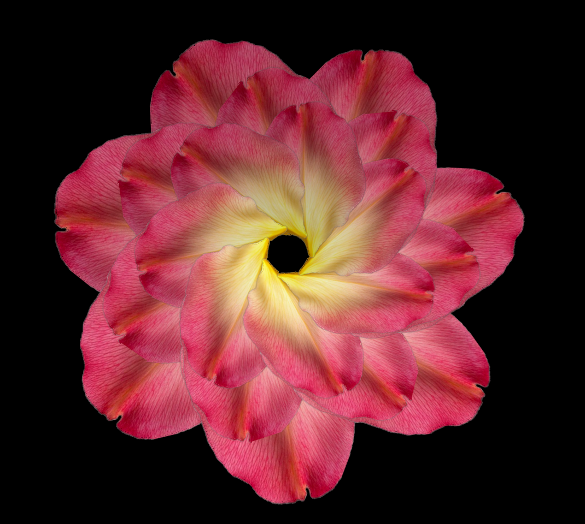
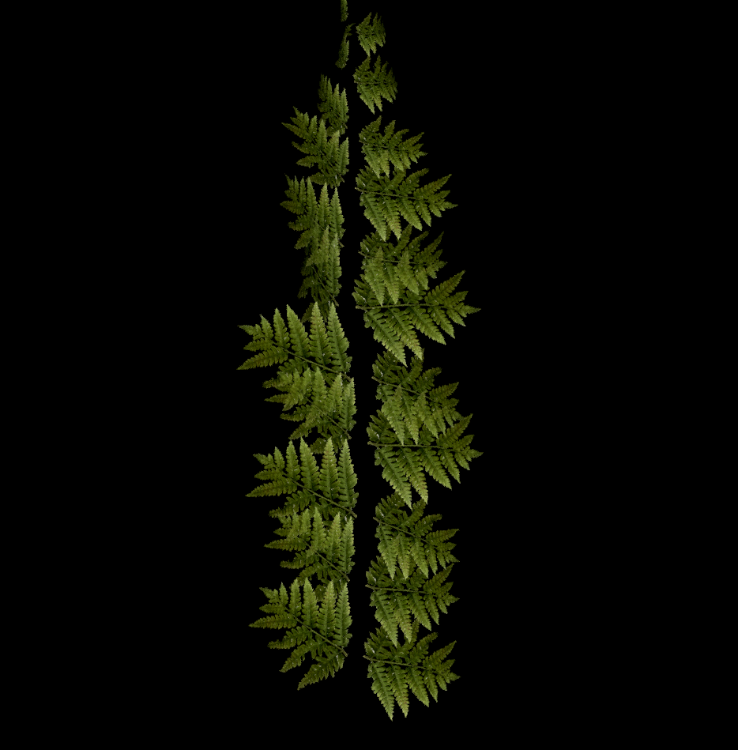
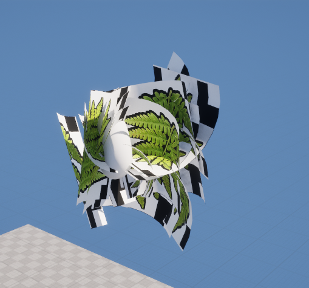
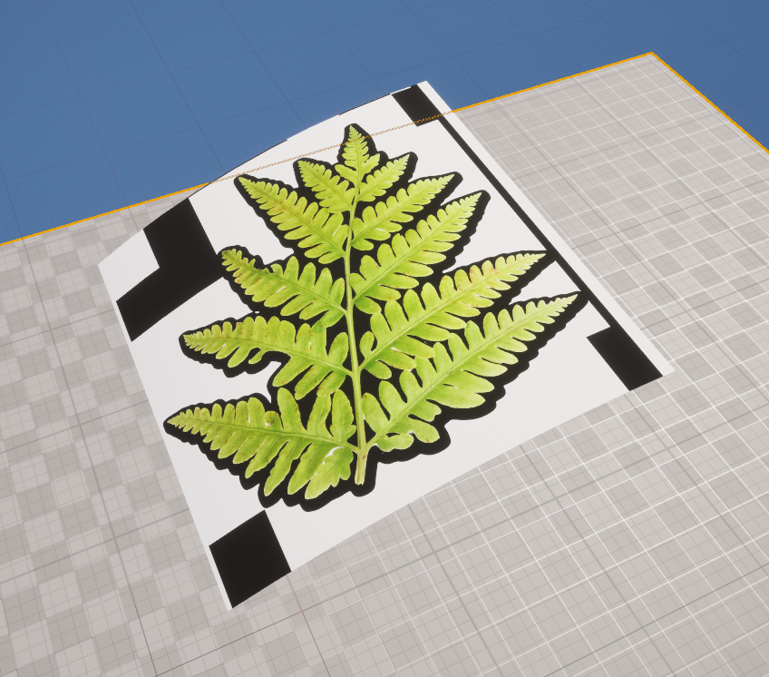

← 部落格 × Special Project | PART1


第 4 周
透明度贴图（Opacity Map）
2 月 1 日
已完成：
待办事项：
-
在单一植物资产上测试 USD variants
-
在 Solaris 中建立并分层 variants
-
把 USD 汇入 Unreal 并验证流程
-
搞懂多材质的 USD variants
-
在 Houdini 中建立 USD 布局、整合 variants，并在 Unreal 中使用
-
尝试 Opacity Mask
为了做出更省资源的叶子，我用 Yichen 的蕨类模型，尝试在上面套用透明度贴图。可以用 Quickuvshade 在 SOP 层预览贴图。
问题解决

问题：我先用一个 grid 取代原本的叶子，但遇到了图中的问题。我猜重复的图案是 grid 的 UV 投影造成的。
解法：改用 UV Flatten 取代 UV Project，现在结果看起来不错。

我也加了关键影格动画，让它看起来像在风中摇曳。



算图
之后我把它汇入 Unreal 并使用 Component Builder，但没有成功。我也试著把它当作 reference 汇回 Houdini，同样不太成功。

不论几何体是静态还是有动画，都有同样的问题。
我也试了一片没有动画的叶子，结果还是不好，虽然在 Houdini 里看起来正常。

即使直接在 component 里建立 grid，汇入 Unreal 时仍然有问题。
-
使用 VAT 并整合透明度贴图
-
处理 USD Variants，并同样整合透明度贴图